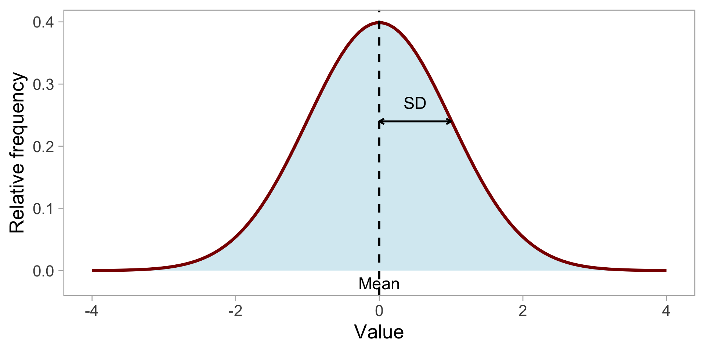
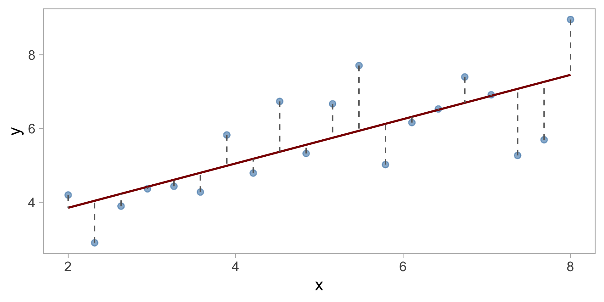
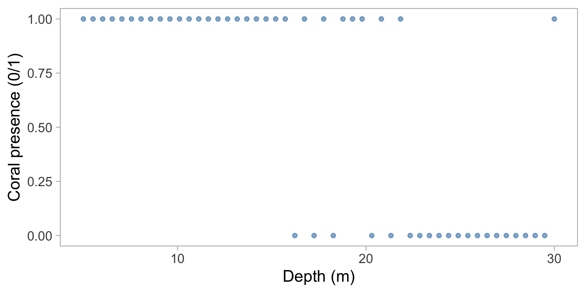
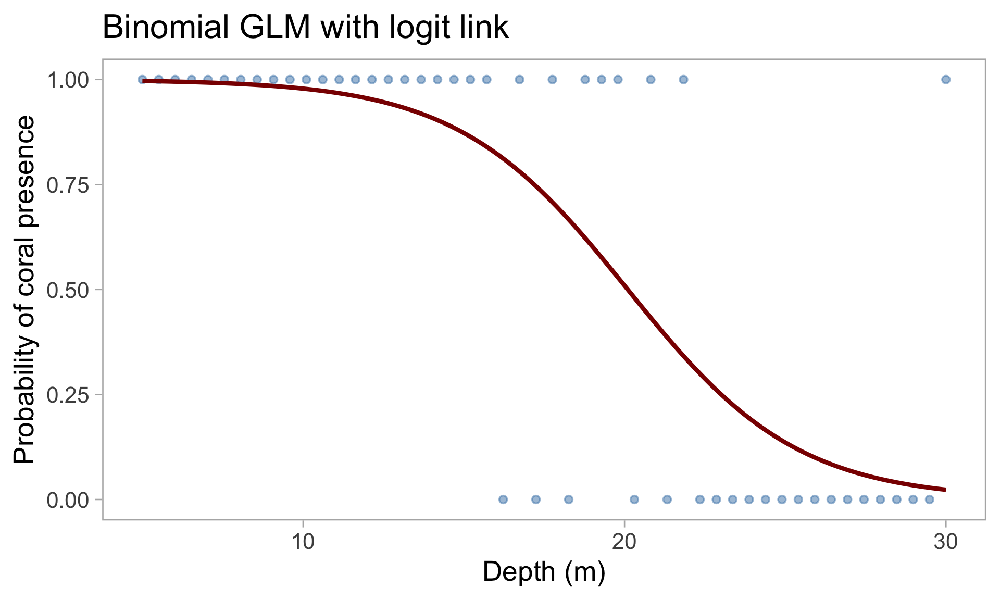

Beyond Normality
Lecture 5
Andreas Eich
Université de la Polynésie française
UE 6.7 Biostatistiques 2
Previous lecture recap
- Linear models with categorical (ANOVA) and numeric (regression) variables
- Post-hoc tests to compare groups
- Assumptions of linear models: independence, homoscedasticity, normality
- Checking assumptions with
check_model()
Today
- Revisit the normal distribution
- Understand what normality actually describes
- Identify when classical linear models fail
- Introduction to Generalized Linear Models (GLMs)
Reminder: Normal distribution
Properties:
- Described by mean \(\mu\) and standard deviation \(\sigma\)
- Symmetric bell shape
- Defined from \(-\infty\) to \(+\infty\)
- Most values close to the mean
“Problematic” properties of the normal
- Symmetric: Equal tails on both sides of the mean
- ❌ Problem for asymmetric data
- Defined on the entire real line: From \(-\infty\) to \(+\infty\)
- ❌ Problem if your data cannot be negative
- ❌ Problem if your data has an upper limit
- Constant variance: Same spread everywhere
- ❌ Problem if variability changes with the mean
Our model so far
For regression (for example):
\[ \begin{align} y_i &\sim \mathrm{Normal}(\mu_i, \sigma) \\ \mu_i &= a + b \cdot x_i \end{align} \]
But what exactly follows a normal distribution?
Normality of residuals

The residuals (difference between data and predictions) follow the normal
Not the raw data itself
\(\mathrm{residual}_i = y_i - \mu_i\)
The normal distribution describes the random noise around the regression line
Reformulating the model
We can write the model as:
\[ y_i = \underbrace{a + b \cdot x_i}_{\text{signal}} + \underbrace{\varepsilon_i}_{\text{noise}} \]
where \(\varepsilon_i \sim \mathrm{Normal}(0, \sigma)\)
The noise is normally distributed, not necessarily the data
When normality fails
Some data types can never produce normally distributed residuals:
- Count data: 0, 1, 2, 3, … (no negative values, no decimals)
- Binary data: Yes/No, Presence/Absence, Alive/Dead
- Strictly positive data: Concentrations, biomass, response times
Example 1: Fish counts
You count the number of sea urchins in 1 m² quadrats

Problems with a normal model:
- Counts are integers (0, 1, 2, …)
- No negative values possible
- Variance often increases with the mean
- Asymmetric distribution
Example 2: Point intercept transects
You measure coral cover: at each point, you record presence or absence

Problems with a normal model:
- Only two possible values: 0 or 1
- Model could predict values < 0 or > 1
- Residuals cannot be normal
Example 3: Phytoplankton biomass
You measure biomass (mg/L) as a function of temperature

Problems with a normal model:
- Biomass cannot be negative
- Variance increases with the mean
- Asymmetric distribution (long tail to the right)
The solution: GLMs
Generalized Linear Models (GLMs) extend linear models to handle other distributions
- Different distributions: Poisson, binomial, gamma, etc.
- Same concepts: explanatory variables, coefficients, predictions
- New component: link function
The link problem
For counts (Poisson distribution), we need \(\mu > 0\)
Classical linear model:
\[ \mu_i = a + b \cdot x_i \]
❌ Can produce negative values!
GLM with log link:
\[ \log(\mu_i) = a + b \cdot x_i \]
✅ \(\mu_i = e^{a + b \cdot x_i}\) is always positive!
Link functions
The link function transforms the distribution parameter to match the linear model
| Data type | Distribution | Typical link | Ensures |
|---|---|---|---|
| Counts | Poisson | log | \(\mu > 0\) |
| Binary (0/1) | Binomial | logit | \(0 < p < 1\) |
| Strictly positive | Gamma | log | \(\mu > 0\) |
| Normal | Normal | identity | no constraint |
Data generation model with GLM
Before (linear model):
\[ \begin{align} y_i &\sim \mathrm{Normal}(\mu_i, \sigma) \\ \mu_i &= a + b \cdot x_i \end{align} \]
Now (GLM for counts):
\[ \begin{align} y_i &\sim \mathrm{Poisson}(\lambda_i) \\ \log(\lambda_i) &= a + b \cdot x_i \end{align} \]
or equivalently: \(\lambda_i = e^{a + b \cdot x_i}\)
Example: Sea urchin counts with GLM
Call:
glm(formula = count ~ site, family = poisson(link = "log"), data = count_data)
Coefficients:
Estimate Std. Error z value Pr(>|z|)
(Intercept) 1.22378 0.09901 12.360 < 2e-16 ***
siteSite B 0.79113 0.11936 6.628 3.41e-11 ***
---
Signif. codes: 0 '***' 0.001 '**' 0.01 '*' 0.05 '.' 0.1 ' ' 1
(Dispersion parameter for poisson family taken to be 1)
Null deviance: 106.671 on 59 degrees of freedom
Residual deviance: 59.247 on 58 degrees of freedom
AIC: 264.04
Number of Fisher Scoring iterations: 4Interpreting GLM coefficients
With a log link, coefficients are on the log scale:
\[ \log(\lambda_i) = a + b \cdot x_i \]
To get the effect on the original scale:
\[ \lambda_i = e^{a + b \cdot x_i} = e^a \cdot e^{b \cdot x_i} \]
A coefficient of \(b = 0.5\) means that \(\lambda\) is multiplied by \(e^{0.5} \approx 1.65\) for each unit increase in \(x\)
Checking GLM models
The same tools work!
Key differences:
- No normality check (we don’t assume normal residuals)
- Overdispersion check (variance > mean for Poisson)
- Deviance residuals rather than simple residuals
Marine example: Coral cover
Predict coral presence/absence as a function of depth
The logit link ensures predicted probabilities stay between 0 and 1:
\[ \log\left(\frac{p_i}{1-p_i}\right) = a + b \cdot \text{depth}_i \]
Visualizing GLM predictions

When to use which model?
| Response type | Distribution | Marine example |
|---|---|---|
| Continuous, can be negative | Normal | Temperature, size difference |
| Counts | Poisson | Number of larvae, fish abundance |
| Binary (Yes/No) | Binomial | Survival, presence/absence |
| Strictly positive | Gamma | Biomass, nutrient concentration |
Summary
- The normal distribution describes residuals, not raw data
- Some data (counts, binary, strictly positive) cannot have normal residuals
- GLMs extend linear models to other distributions
- Link functions connect the linear model to the distribution parameter
- You already know the concepts — GLMs are just a generalization
Next week
- Fitting GLMs in R with
glm() - Interpreting outputs and coefficients
- Comparing models (Poisson vs binomial vs gamma)
- Practical examples with marine data
Your turn
- Go to the course website
- Go to the calendar
- Click on
TP 05 - Connect to Posit Cloud